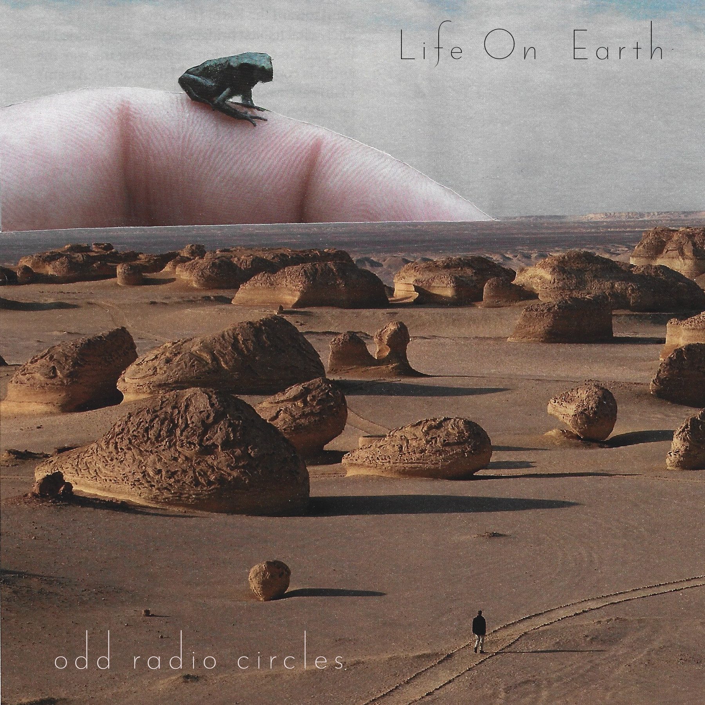
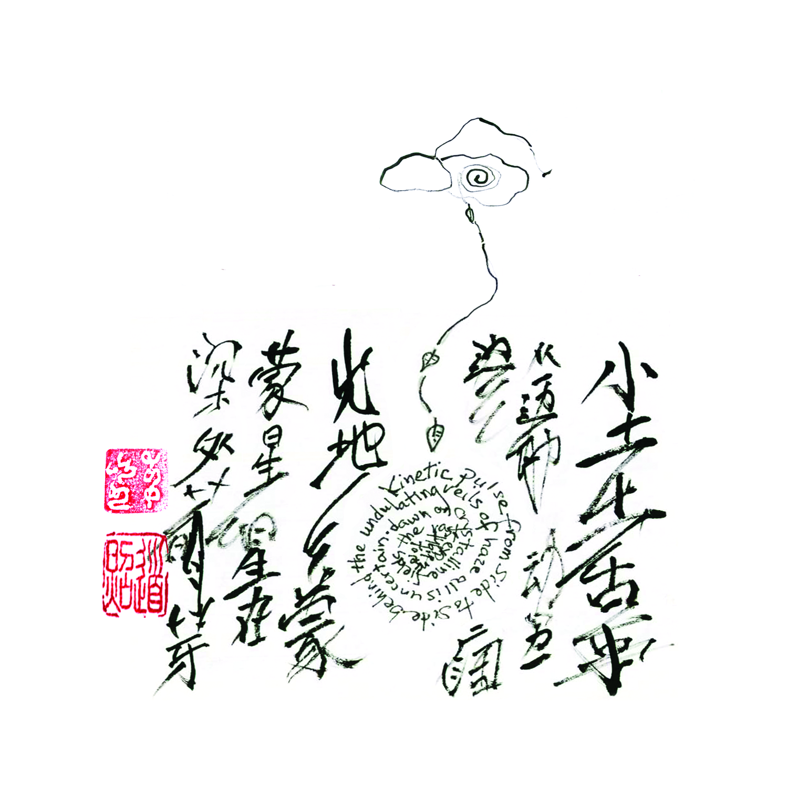

albums
Life on Earth (2022)

This (very) short EP is comprised of only two proper tracks,
linked by a third, atonal 30-second
fragment. Arthropods
was originally written in 2018 with the poet Simon Chiatante
for what would later become our collaborative album and
first Odd Radio Circles full-length, Stories in the
Dust. The arrangement was revisited and completed in 2020
as we were working on the aforementioned album, and was meant
to be included on it. As the latter took shape we realised
this track had quite a different feel from the other pieces
and clashed with the overall atmosphere of the work, so it was
removed from the final product. The track was influenced as
much by 1990s electronica as it was by classic 1970s
progressive rock.
Plankton was the result of my attempt to learn how to
operate a sequencer and MIDI keyboard I had just acquired at
the time. The sounds produced reminded me of tiny organisms
swimming through the superficial waters of the ocean, and I
liked it enough to want to release it in some form.
Mycelial Network came from a guitar riff I would
often play as an exercise. After realising it sounded
interesting when played on a synthesizer, I started working
on an arrangement around that riff, with drums influenced by
the electronic sounds on Adrian
Belew's Side
Two album.
Tracklist
- Arthropods
- Plankton
- Mycelial Network
Credits
-
Bruno Pezer:
- Synthesizers
- Sampling
- Guitars
- Drum sequencing
- Mixing
- Mastering
- Cover art
-
Simon Chiatante:
- Guitar
Stories in the Dust (2021)

The first full-length album by Odd Radio Circles is a
collaborative work written and recorded with the poet Simon
Chiatante, mostly over the course of the first year of the
COVID-19 pandemic. While I have collaborated with Simon on a
number of projects in the past, this is the first one we
have managed to complete and publish. In fact the album and
its cover art were originally conceived well before Odd
Radio Circles, while I was still operating under the moniker
Transmissions. We had recorded a series of ideas, snippets,
and demos over the course of the winter of 2018, which were
subsequently partially abandoned as parallel work on other
projects began and writer's block started to set in. Some of
this material was performed live on a couple of occasions,
but mostly left undeveloped.
As Italy found itself in a series of lockdowns of varying
degrees of severity in the first half of 2020 we found
ourselves with little to do, nowhere to go, and a lot of
free time on our hands, which compelled us to start work on
a new project. After reviewing the material we had up to
that point, a lot of it was discarded as I felt it was
somewhat directionless, lacked satisfying structure or
intention. Furthermore, by that point I had already decided
to end the Transmissions project and settled for a new name.
What material did survive from the original recordings ended
up on the
tracks Magnetic
Fields, Sitting,
and Coda.
A lot of the material is based on semi-improvised parts
performed on guitar or synthesizer by Simon or myself that
were subsequently fleshed out and patched together. Simon's
idea to write a few stanzas of minimalist poetry to
accompany each of the tracks informed the album's concept,
which represents a spiritual journey linking the earthly
plane (side A, tracks 1-4) to the celestial plane (side B,
tracks 5-7).
Field recordings feature heavily across the album, most of
them taken in Brindisi, Italy; a few of the field recordings
on Stillness
were taken in Berlin, Germany and Shenzhen, China.
On Moon,
I recorded Simon lifting, dropping, and shuffling some
stones at the foot of the ruined lighthouse
at Diga
di Punta Riso on the Brindisi coastline. These
recordings were looped, heavily reverberated and their
pitches manipulated, achieving the spacey and haunting
soundscape which inspired the track's title. The improvised
guitar was inspired by The Walker
Brothers' The
Electrician.
Gate
is an attempt to translate into music the same sort of
abstraction that was expressed visually by artists such
as Hilma
af Klint. The track was borne of an attempt to play something akin to a
slowed down Japanese gagaku on a synthesizer.
The album's
opener, Earth
was inspired in equal parts by the magnificent band of the
same name and the minimalist music of Terry Riley and La
Monte Young, the latter of which have indeed influenced the
entirety of this album.
Tracklist
- Earth
- Magnetic Fields
- Sitting
- Stillness
- Moon
- Gate
- Coda
Credits
- Bruno Pezer:
- Synthesizer
- Guitar
- Bass guitar
- Musical wall
- Field recordings
- Drum sequencing
- Mixing
- Mastering
- Simon Chiatante:
- Synthesizer
- Guitar
- Field recordings
- Tibetan bowl
- Stones
- Words
- Paul Quintero:
- Cover art